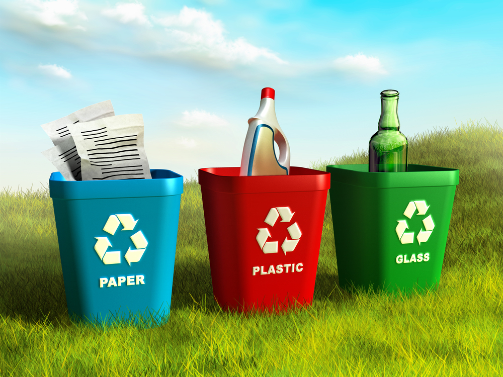
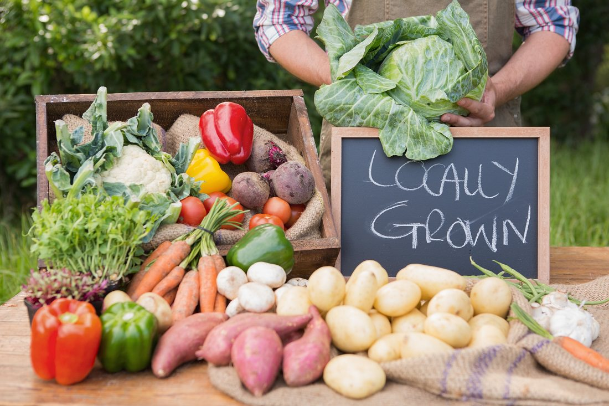
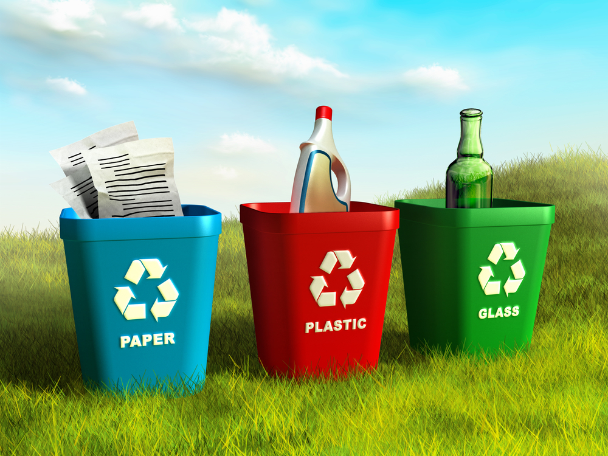
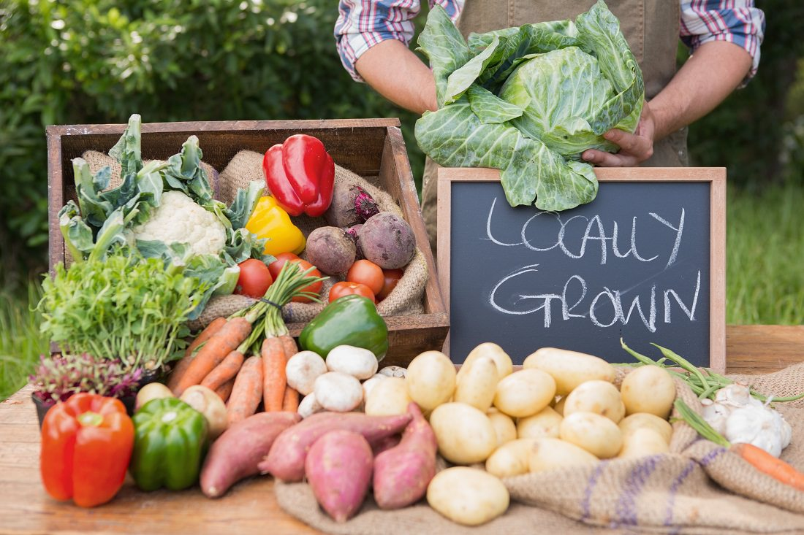

The circumstances, objects, or conditions by which one is surrounded. 2. a. : the complex of physical, chemical, and biotic factors (such as climate, soil, and living things) that act upon an organism or an ecological community and ultimately determine its form and survival.
Increasingly, research has shown that just being around a natural environment makes us happier and healthier. In a 2018 poll of Toronto residents, 78% were at least very concerned about the impact of climate change on Toronto, and even more were concerned about the impact of climate change on the world. The city has been successfully working to reduce its greenhouse gas emissions and improve its air and water quality, but the looming effects of climate change pose major threats to the city’s resilience.
EXTERNAL RESOURCES
How to Protect the Environment
So here are ways you can start to protect the environment today:
 
